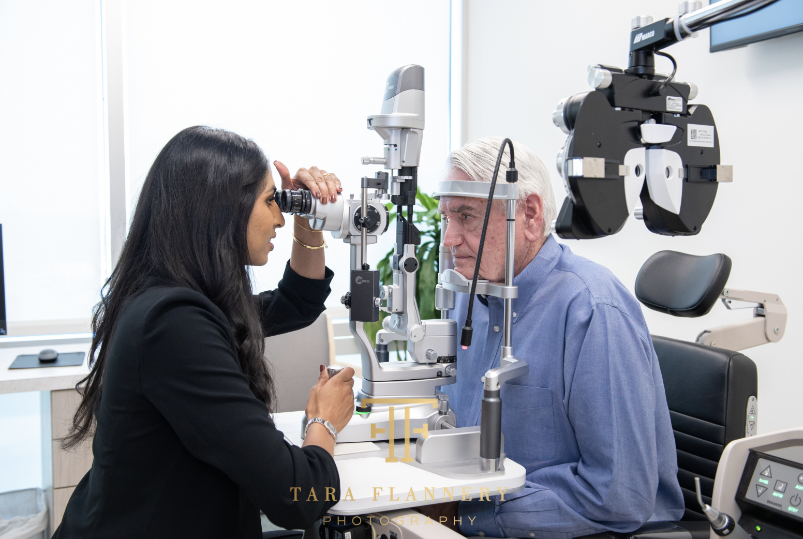

Glaucoma Care
Glaucoma is a group of eye conditions that damage the optic nerve — often silently, with no warning symptoms. At Soni Vision Institute, we offer comprehensive medical and surgical glaucoma management to halt progression and preserve your sight.

The Condition
Glaucoma is typically caused by elevated intraocular pressure (IOP) that gradually damages the optic nerve — the critical connection between the eye and the brain. Because the optic nerve cannot regenerate, vision lost to glaucoma cannot be restored. Left untreated, it leads to irreversible peripheral vision loss and, eventually, blindness.
The most common form, primary open-angle glaucoma, progresses painlessly and without noticeable symptoms in its early stages. By the time vision changes are apparent, significant and permanent damage has already occurred. This is why regular monitoring and early detection are so critical.
At Soni Vision Institute, Dr. Nikitha Reddy is fellowship-trained in advanced glaucoma management — offering every level of care from medical treatment through minimally invasive and conventional surgery.
First-line glaucoma treatment. Prescription drops reduce IOP by decreasing fluid production or improving drainage.
Selective Laser Trabeculoplasty — a gentle, in-office procedure that improves fluid outflow and can reduce or eliminate the need for daily drops.
Next-generation procedures using microscopic instruments to lower eye pressure with a dramatically safer profile than conventional surgery.
For advanced or medically uncontrolled glaucoma, conventional filtering surgery creates a new drainage pathway to aggressively lower IOP.
Know Your Risk
Glaucoma can affect anyone, but certain factors significantly increase your lifetime risk. Knowing them is the first step toward protecting your sight.
High intraocular pressure (IOP) is the most significant modifiable risk factor for glaucoma. Many people with elevated IOP have no symptoms — it is only detectable through examination.
Having a first-degree relative with glaucoma increases your lifetime risk by four to nine times. If a parent or sibling has been diagnosed, annual screening is strongly advised.
The risk of glaucoma increases substantially after age 60. African Americans face elevated risk starting at age 40. Regular comprehensive exams become increasingly important with age.
Diabetes, hypertension, severe nearsightedness, and long-term corticosteroid use are all associated with higher glaucoma risk. Systemic health and eye health are deeply interconnected.
Common Questions
The most important questions about glaucoma — answered clearly and completely.
Glaucoma cannot be cured — optic nerve damage that has already occurred is permanent and irreversible. However, with early detection and consistent treatment, glaucoma can be effectively controlled. The goal of all glaucoma treatment is to lower intraocular pressure sufficiently to prevent further optic nerve damage and preserve the vision you have. Many patients with well-managed glaucoma retain their vision for their entire lives.
In its most common form (primary open-angle glaucoma), glaucoma has no symptoms in the early and middle stages. There is no pain, no redness, and no obvious vision change until significant peripheral vision is lost. This is why glaucoma is called the "silent thief of sight." By the time most patients notice a change in their peripheral vision, over 40% of the optic nerve may already be damaged. Routine eye exams — including IOP measurement and optic nerve evaluation — are the only reliable way to detect glaucoma before irreversible vision loss occurs.
For patients with diagnosed glaucoma, monitoring frequency depends on disease severity and how well IOP is controlled — typically every 3–6 months. For high-risk patients without a diagnosis, annual comprehensive exams are recommended. For lower-risk patients over 40, exams every 1–2 years are appropriate. Dr. Reddy will create a personalized monitoring schedule based on your specific risk profile, optic nerve appearance, and visual field status.
Schedule a comprehensive glaucoma evaluation with Dr. Nikitha Reddy — Houston's fellowship-trained glaucoma specialist.